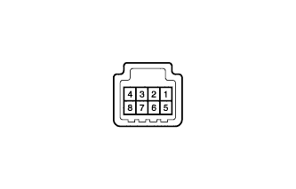

СИСТЕМА СТЕКЛООЧИСТИТЕЛЕЙ И СТЕКЛООМЫВАТЕЛЕЙ > Цепь переключателя очистителя передних фар |
| 1.ПРОВЕРЬТЕ ПЕРЕКЛЮЧАТЕЛЬ ОЧИСТИТЕЛЯ ФАР В СБОРЕ |
|  |
Снимите переключатель очистителя фар в сборе (Нажмите здесь).
Измерьте сопротивление в соответствии со значениями, приведенными в таблице ниже.
| Контакты для подключения диагностического прибора | Положение переключателя | Заданные условия |
| 5 - 8 | Переключатель очистителя фар включен | Менее 1 Ом |
| 5 - 8 | Переключатель очистителя фар выключен | 10 кОм или более |
|
| ||||
| OK | |
| 2.ПРОВЕРЬТЕ ЖГУТ ПРОВОДОВ И РАЗЪЕМ (ПЕРЕКЛЮЧАТЕЛЬ ОЧИСТИТЕЛЯ ФАР - РЕЛЕ УПРАВЛЕНИЯ ОЧИСТИТЕЛЕМ ФАР И ЭБУ КУЗОВА) |
Отсоедините разъем G72 переключателя очистителя фар.
Отсоедините разъем A38 реле управления очистителем фар.
Снимите главный ЭБУ кузова (Нажмите здесь).
Измерьте напряжение в соответствии со значениями, приведенными в таблице.
| Контакты для подключения диагностического прибора | Условие | Заданные условия |
| G72-8 - A38-2 | Всегда | Менее 1 Ом |
| G72-5 - A-15 (HRLY) | Всегда | Менее 1 Ом |
| G72-8 - масса | Всегда | 10 кОм или более |
| G72-5 - масса | Всегда | 10 кОм или более |
|
| ||||
| OK | ||
| ||